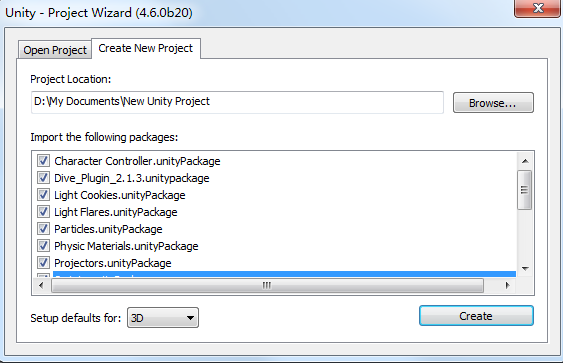
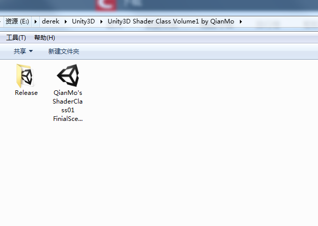
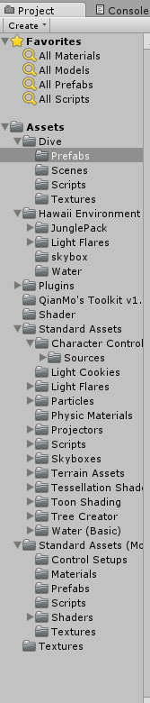
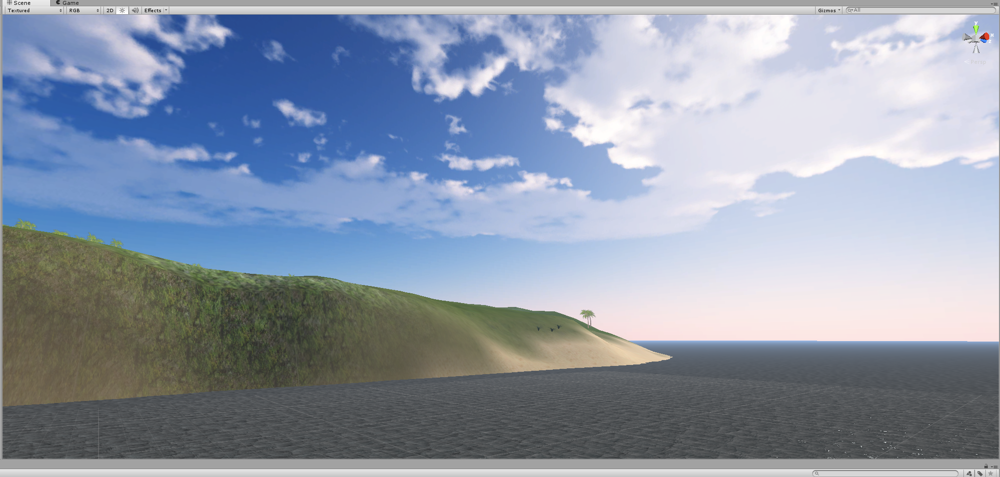
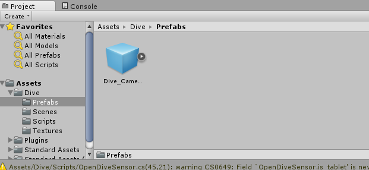
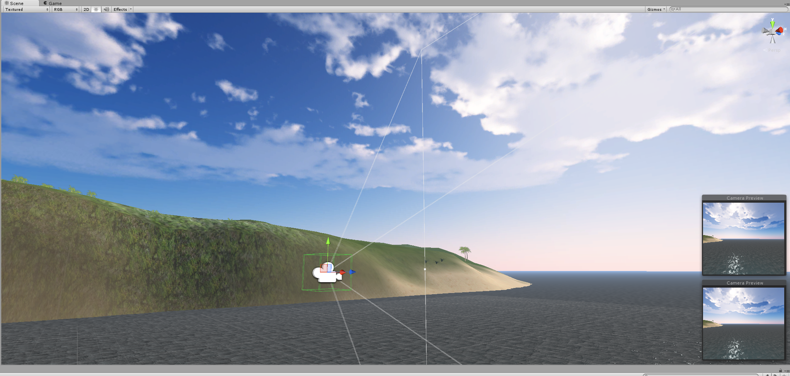
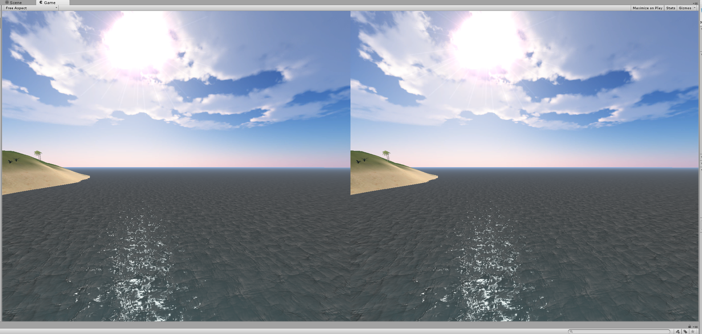
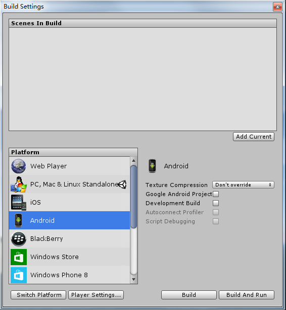
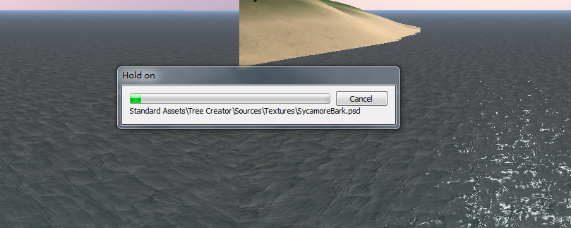

虚拟现实应用开发之
基于Unity的CardBoard应用系统开发指南
开发环境：
1、安装unity开发软件：http://unity3d.com/unity/download
2、一台带有gsensor（重力传感器）和msensor（磁力传感器）的手机-请注意不仅是ANDROID！！也可以是IPHONE！！NB吧！+一个cardboard(淘宝上有20来块一个)；
3、AndroidSDK；
4、OPEN DIVE SENSOR插件：https://www.durovis.com/sdk.html 这是最牛B的插件
开发一个简单的CARDBOARD应用
可以先体验一下：hawii.apk
一、把Dive_Plugin_2.1.3.unitypackage放置到unity插件目录下Unity\Editor\Standard Packages；
二、打开UNITY3D，建立项目，注意把所有package都选上；

然后点create；
三、在网上下了个夏威夷场景包：

四、把下载的场景包导入UNITY项目：
导入的方法很简单，直接把上面的QianMo's ShaderClass01 FinialScene.unitypackage拉到下面右边空白区，即开始自动导入；
导入完成后的目录请看：

效果请看：

蓝天白云，大海！
五、好了，开始做个第一人称，最简单的就是放一对“眼睛”：
把原来的CAMERA对像删掉；这个场景里面就没有CAMERA；
把DIVE目录下的Dual_Camera拉到场景中；

注意看路径；
拉入后效果：

放到哪里你自己决定，选中那两个子CAMERA，右下角就会出现CAMERA的预览图像，就好像你的两只眼睛看到的一样；
预览画面如下：

左右分屏效果；
六、生成ANDROID APP；
选择file-build setting子菜单：

选择左边下面框里面的android:

然后选build就可以生成apk了，你也可以把手机先插在电脑上，然后点击build and run这样会编好后直接给你安装到手机上；
等待UNITY自动生成：

生成的APK:
Work done!
来看看效果。。。